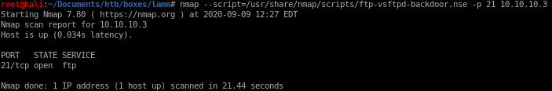

Index
nmap scripts
here's a good way to search through nmap's script database to search for potential vulnerabilties for services we've enumeratedls /usr/share/nmap/scripts/ftp*
where the ‘*’ after ‘ftp’ serves as a wildcard to list all of nmaps vulnerability scans relating to ftp

lets use the ftp-vsftpd-backdoor.nse script to scan Lame's vsftpd 2.3.4 service
nmap --script=/usr/share/nmap/scripts/ftp-vsftpd-backdoor.nse -p 21 10.10.10.3

the script reports that the service is not vulnerable to the backdoor we serached, it's a rabbit hole